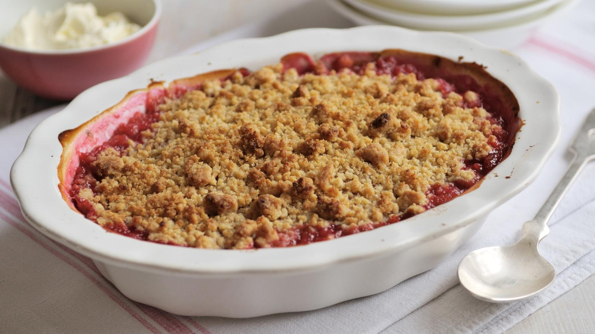

Rhubarb Crumble

Description
This classic rhubarb crumble recipe will take you to comfort food heaven in six short steps and under an hour.
Each serving provides 630 kcal, 6g protein, 97g carbohydrates (of which 59g sugars), 23g fat (of which 14.5g saturates),
4g fibre and 0.5g salt.
Ingredients
- 10 sticks of rhubarb
- 8 tbsp caster sugar
- 1 tsp ground ginger
- 110g/4oz butter, softened
- 110g/4oz demerara sugar
- 200g/7oz plain flour
To serve
Steps
- Preheat the oven to 180C/160C Fan/Gas 4.
- Cut the rhubarb into 7½cm/3in long sticks and place on an oven tray. Sprinkle with 4 tablespoons of water and the caster
sugar. Roast for 10 minutes. Sprinkle over the ginger and mix well.
- Fill an ovenproof dish about 4cm/1½in deep with the rhubarb.
- Rub the butter into the flour then mix in the demerara sugar to make the crumble topping. Sprinkle over the rhubarb and
bake for 35–45 minutes, or until the crumble topping is crisp and golden-brown and the rhubarb filling has softened and
is bubbling.
- Allow to cool slightly before serving with double cream.
Home